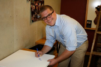
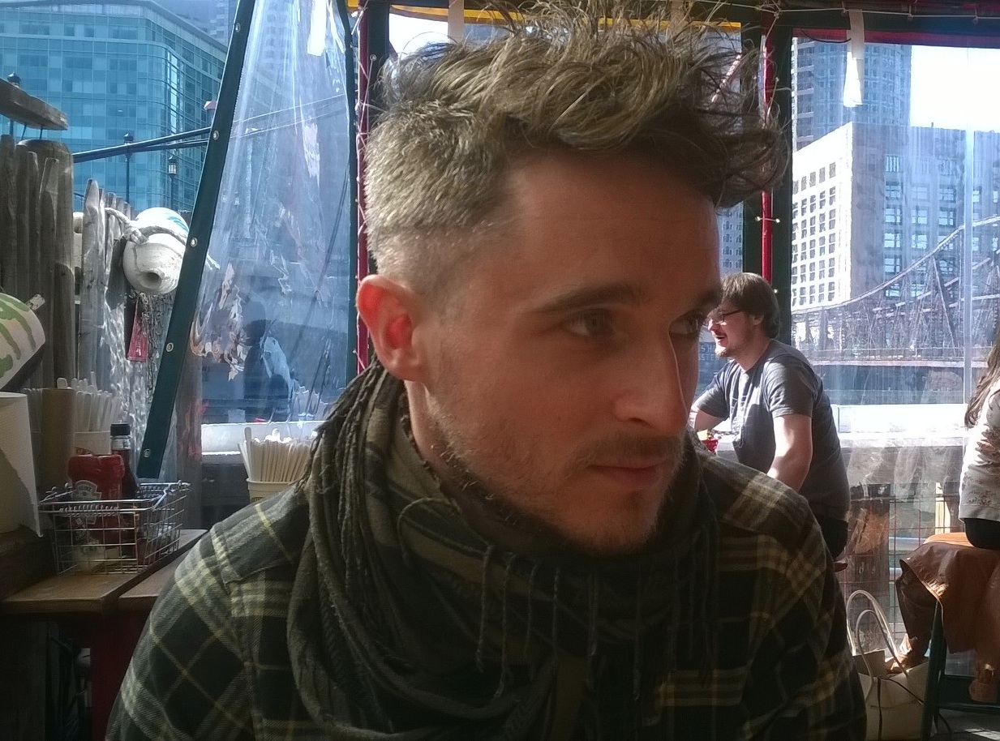
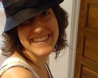

Lab Members
PI: Eric Alm
 Research in my group includes both computational/theoretical
and experimental approaches to understanding the evolution of microorganisms, emphasizing a
'systems-level' perspective. Some areas of special interest include:
Research in my group includes both computational/theoretical
and experimental approaches to understanding the evolution of microorganisms, emphasizing a
'systems-level' perspective. Some areas of special interest include:
- Tools for detecting natural selection in microbes
- The evolutionary origin of gene families
- Mining metagenomic sequence data
- Experimental evolution of microbes
- Modeling bacterial ecology
- Gene regulatory networks in bacteria
- Protein structure and design
Postdocs
 Sean Clarke
Sean ClarkeI use experimental evolution and whole genome resequencing to study how bacteria adapt to high salinity in the lab and the role of hypermutation in that process. I'm interested in how microbes affect our everyday environments and our food. Read more

Christopher Corzett
I am interested in how microbes survive and thrive in diverse and dynamic environments. This includes understanding how bacteria sense and respond to environmental change, the metabolic machinery required for different feeding strategies, and how microbes adapt and evolve various lifestyles..... Read more
I am interested in how microbes survive and thrive in diverse and dynamic environments. This includes understanding how bacteria sense and respond to environmental change, the metabolic machinery required for different feeding strategies, and how microbes adapt and evolve various lifestyles..... Read more
 Greg Fournier
Greg FournierMy current research focuses on integrating phylogenetics and horizontal gene transfer (HGT) with studies of microbial evolution and planetary history. ... Read more
 Sarah Pacocha Preheim
Sarah Pacocha PreheimI am interested in bacterial diversity, especially within aquatic ecosystems. The small size, genetic diversity and metabolic versatility of bacteria make them ideal systems for studying principles in ecology and evolution... Read more
 Manu Tamminen
Manu TamminenI'm investigating novel approaches to extract and analyze genomic and transcriptomic information from single cells. To achieve this exciting objective I use a variety of tools, including flow assisted cell sorting, microfluidics, molecular biology and computational analysis. This combination of laboratory and computational approaches has considerable benefits over metagenomics... Read more
 Avihu Yona
Avihu YonaDuring my doctoral research I utilized experimental evolution to study the evolutionary dynamics of genomic duplications like aneuploidy and tRNA genes. Now, Im interested in the way complex communities evolve as an integral entity and in how evolutionary forces can be applied to reshape such communities towards desirable traits... Read more

Mathieu Groussing
Broadly speaking, I am interested in the inference of biological properties of ancient prokaryotic life and in how bacterial and archaeal communities evolve. My main interests focus on the study of genetic data (DNA, proteins) to understand the main evolutionary processes... Read more
Broadly speaking, I am interested in the inference of biological properties of ancient prokaryotic life and in how bacterial and archaeal communities evolve. My main interests focus on the study of genetic data (DNA, proteins) to understand the main evolutionary processes... Read more
Staff
 Caroline Antolik
Caroline AntolikAs Technical Assistant in the Alm lab, I help out with various aspects of lab members' projects. My main responsibilities include 16S library prep for Illumina sequencing and training for users on specialized equipment such as our Bioanalyzer and liquid handling robot... Read more
Graduate Students
 Sean Kearney
Sean KearneyMicrobes rule the world; our very existence is dependent on the once free-living oxygen-respiring bacteria now known as mitochondria. We cannot even begin to imagine how interlocked our own lives are with those of 4000 million year old organisms. I am interested in studying how microorganisms influence evolution and ecology over vast temporal and spatial scales.... Read more
 Scott Olesen
Scott OlesenMicrobial metabolisms transform the world around us, mediating key geochemical cycles and even determining human scent. I combine experimental design and computational techniques to assess and engineer the role of microbes in the environment and the human microbiome...Read more
 Allison Perrotta
Allison PerrottaMy current focus in the lab is to create and test high throughput methods for preparing 16s Illumina sequencing libraries from diverse environmental sources. Our lab researches the microbial ecology found in a myriad of environments and under diverse conditions... Read more
 Chris Smillie
Chris SmillieI'm interested in using computational methods to study the evolution and ecology of the human microbiome. Previously, I've collaborated with Sarah, Eli, and Paco to develop SLiME, a tool that uses machine learning to identify microbial signatures associated with disease... Read more
 Mark Smith
Mark SmithBroadly, I am interested in understanding the many ways that the hidden microbial majority influences the world around (and within) us. Currently, my research is focused on uncovering and characterizing a network of gene exchange in the human microbiome through comparative genomics... Read more

Sarah Spencer
I'm interested in how ecological principles play out at the resolution of single cells. To explore this I'm developing high-throughput sequencing technology that can immobilize interacting cells for downstream 16S profiling. I'm starting to apply this technique to aquatic communities, but eventually I'd like to adapt the protocol to address other problems in microbial evolution and ecology. Read more
I'm interested in how ecological principles play out at the resolution of single cells. To explore this I'm developing high-throughput sequencing technology that can immobilize interacting cells for downstream 16S profiling. I'm starting to apply this technique to aquatic communities, but eventually I'd like to adapt the protocol to address other problems in microbial evolution and ecology. Read more